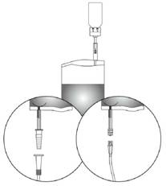
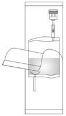
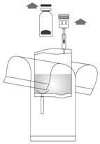
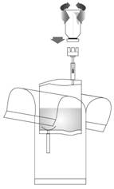
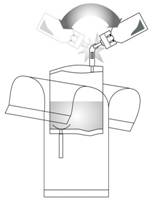
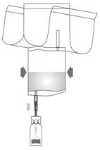
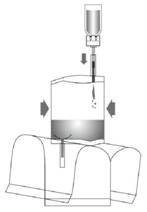
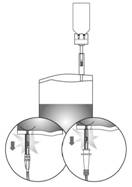

RÉSUMÉ DES CARACTÉRISTIQUES DU PRODUIT
ANSM - Mis à jour le : 21/08/2012
BCG-MEDAC, poudre et solvant pour suspension pour administration intravésicale
2. COMPOSITION QUALITATIVE ET QUANTITATIVE
Après reconstitution, un flacon de BCG-MEDAC contient
Bactéries BCG (Bacille de Calmette-Guérin; germe RIVM provenant du germe 1173-P2) 2 x 108 à 3 x 109 unités viables
Pour la liste complète des excipients, voir rubrique 6.1.
Poudre et solvant pour suspension pour administration intravésicale.
Poudre blanche et solution incolore et limpide.
4.1. Indications thérapeutiques
Traitement du carcinome urothélial non-invasif de la vessie:
· Traitement curatif du carcinome in situ
· Traitement prophylactique de la récidive du:
o carcinome urothélial limitée à la muqueuse:
§ pTa G1-G2 s'il s'agit d'une tumeur multifocale et/ou récidivante
§ pTa G3
o carcinome urothélial envahissant la lamina propria mais non la musculeuse de la vessie (pT1)
o carcinome in situ.
4.2. Posologie et mode d'administration
Posologie
Le contenu d'un flacon est requis pour une instillation vésicale. Les instructions concernant la reconstitution sont données dans la rubrique 6.6.
Durée
Carcinome in situ
Le schéma d'un traitement standard comprend une instillation intravésicale de BCG-MEDAC par semaine pendant six semaines consécutives en traitement d'induction. Le traitement par BCG ne doit débuter que 2 à 3 semaines après la résection transurétrale (RTU). Après une fenêtre thérapeutique de 4 semaines, l'administration intravésicale doit être reprise dans le cadre d'un traitement d'entretien pendant au moins un an. Les schémas de traitement d'entretien sont décrits ci-dessous.
Traitement d'induction (traitement prophylactique de la récurrence)
Le traitement par BCG doit être instauré environ 2 à 3 semaines après la RTU ou après la biopsie vésicale sans cathétérisme traumatique et doit être répété chaque semaine pendant 6 semaines. Cette thérapie doit être suivie d'un traitement d'entretien pour les tumeurs à risque intermédiaire et élevé.
Traitement d'entretien
Un schéma comprend une thérapie mensuelle de 12 mois. Un autre schéma thérapeutique d'entretien consiste en 1 instillation par semaine pendant 3 semaines aux 3ème, 6ème, 12ème, 18ème, 24ème, 30ème et 36ème mois. Dans le cadre de ce schéma, 27 instillations au total sont administrées pendant une période de trois ans.
Les schémas thérapeutiques mentionnés avec différentes souches de BCG ont été étudiés dans le cadre d'études cliniques incluant un grand nombre de patients. A l'heure actuelle, il n'est pas possible d'indiquer lequel de ces schémas est le meilleur.
Administration
BCG-MEDAC doit être administré dans les conditions requises pour l'endoscopie intravésicale.
Le patient ne doit pas boire au cours des 4 heures qui précèdent l'instillation et pendant 2 heures après l'instillation. La vessie doit être vidée avant l'instillation de BCG. BCG-MEDAC est introduit dans la vessie au moyen d'un cathéter et à basse pression. La suspension de BCG-MEDAC instillée doit rester dans la vessie pendant 2 heures si possible. Pendant ce temps, la suspension doit rester en contact suffisant avec toute la surface de la muqueuse vésicale. Par conséquent, le patient doit être mobilisé autant que possible. Deux heures plus tard, le patient doit éliminer la suspension instillée de préférence en position assise.
S'il n'existe pas de contre-indication médicale spécifique, une hyperhydratation est conseillée au patient pendant 48 heures après chaque instillation.
BCG-MEDAC ne doit pas être administré à l'enfant car son innocuité et son efficacité n'ont pas été établies.
Il n'y a pas de recommandations spécifiques concernant l'utilisation du produit chez le patient âgé.
· Hypersensibilité à l'un des composants.
· BCG-MEDAC ne doit pas être utilisé chez les immunodéprimés ou les personnes présentant un déficit immunitaire congénital ou acquis causé par la pathologie concomitante (par ex. un sérodiagnostic du VIH positif, une leucémie ou un lymphome), un traitement cancéreux (par ex. par des cytostatiques, une radiothérapie) ou un traitement immunosuppresseur (par ex. par des corticostéroïdes).
· BCG-MEDAC ne doit pas être administré à des personnes atteintes d'une tuberculose évolutive. La présence d'une tuberculose évolutive doit être exclue au moyen d'une anamnèse appropriée et si cela est indiqué, par les tests diagnostiques pratiqués conformément aux recommandations locales.
· Antécédents de radiothérapie de la vessie.
· Le traitement par BCG-MEDAC est contre-indiqué chez la femme qui allaite (voir rubrique 4.6).
· BCG-MEDAC ne doit être instillé que 2 à 3 semaines après une RTU, une biopsie vésicale ou un cathétérisme traumatique.
· Perforation de la vessie (voir rubrique 4.4).
· Infection urinaire aiguë (voir rubrique 4.4).
4.4. Mises en garde spéciales et précautions d'emploi
BCG-MEDAC ne doit pas être administré par voie sous-cutanée, intradermique, intramusculaire ou intraveineuse ou sous forme de vaccin.
Traitement des symptômes, signes ou syndromes (voir rubrique 4.8).
Nombre d'instillations de BCG
Les effets indésirables du traitement par BCG sont fréquents mais généralement bénins et transitoires. Les réactions indésirables augmentent généralement avec le nombre d'instillations de BCG.
Infection/réaction systémique sévère au BCG
On a rarement rapporté des infections/réactions systémiques au BCG. Il s'agit de fièvre de plus de 39,5°C pendant au moins 12 heures, fièvre de plus de 38,5°C pendant au moins 48 heures, miliaire à BCG, hépatite granulomateuse, pertubation du bilan biologique hépatique, dysfonctionnement organique en dehors de l'appareil génito-urinaire avec inflammation granulomateuse à la biopsie, syndrome de Reiter.
La présence possible d'infections systémiques sévères dues au BCG doit être envisagée avant l'instauration du traitement.
Une instillation traumatique peut provoquer une septicémie due au BCG accompagnée éventuellement d'un choc septique pouvant conduire au décès.
Une infection des voies urinaires doit être exclue avant chaque instillation vésicale de BCG (une inflammation de la muqueuse vésicale peut accroître le risque d'une dissémination du BCG par le sang hématogène). Si une infection des voies urinaires est diagnostiquée pendant le traitement par BCG, il doit être interrompu jusqu'à l'obtention d'une culture urinaire négative et jusqu'à la fin de l'antibiothérapie.
Des cas d'infection d'implants et de greffons ont été rapportés chez les patients atteints d'un anévrisme ou porteurs d'une prothèse.
Persistance du BCG
Des cas isolés de persistance du BCG dans les voies urinaires pendant plus de 16 mois ont été rapportés.
Fièvre ou hématurie macroscopique
Le traitement doit être reporté jusqu'à la disparition de la fièvre concomitante ou de l'hématurie macroscopique.
Faible capacité vésicale
Les patients dont la capacité vésicale est faible courent un risque accru de contracture de la vessie.
HLA-B27
Chez les patients qui sont HLA-B27 positifs, la survenue d'une arthrite réactionnelle ou syndrome de Fiessinger-Leroy-Reiter est plus fréquente.
Précautions relatives à la manipulation
BCG-MEDAC ne doit pas être manipulé dans la même pièce et par le même personnel que celui qui prépare des cytotoxiques pour administration intraveineuse. BCG-MEDAC ne doit pas être manipulé par une personne atteinte d'un déficit immunitaire connu. Le contact de BCG-MEDAC avec la peau ou les muqueuses doit être évité. Une contamination peut entraîner une réaction d'hypersensibilité ou une infection de la région concernée.
Patients immunodéficients
Les patients présentant un déficit immunitaire connu doivent éviter tout contact avec des patients traités par BCG.
Tests à la tuberculine intradermiques
Le traitement intravésical par BCG-MEDAC peut induire une sensibilité à la tuberculine et compliquer l'interprétation ultérieure des tests à la tuberculine intradermiques réalisés pour diagnostiquer une infection mycobactérienne. Aussi, la détermination de la réactivité du patient à la tuberculine pourrait être réalisée avant l'administration du BCG-MEDAC.
Grossesse
BCG-MEDAC n'est pas recommandé pendant la grossesse (voir rubrique 4.6).
Transmission sexuelle
Jusqu'à présent, une transmission sexuelle du BCG n'a pas été rapportée mais il est recommandé d'utiliser un préservatif pendant les rapports sexuels pendant une semaine après le traitement par BCG.
Hygiène générale
Il est recommandé de se laver les mains et la région génitale après les mictions. Cela s'applique en particulier aux premières mictions suivant l'instillation de BCG-MEDAC. En cas de contamination de lésions cutanées, il est recommandé d'utiliser un désinfectant approprié.
Renversement accidentel de BCG-MEDAC
En cas de renversement accidentel d'une suspension de BCG-MEDAC, traiter avec un désinfectant possédant une activité démontrée contre les mycobactéries. Les éclaboussures sur la peau doivent être traitées avec un désinfectant approprié.
4.5. Interactions avec d'autres médicaments et autres formes d'interactions
Les bactéries BCG sont sensibles aux antituberculeux (par ex. l'éthambutol, la streptomycine, l'acide p-aminosalicylique (PAS), l'isoniazide (INH) et la rifampicine), aux antibiotiques, antiseptiques et lubrifiants. Une résistance au pyrazinamide et à la cyclosérine a été décrite.
L'administration concomitante d'antituberculeux et d'antibiotiques comme les fluoroquinolones, la doxycycline ou la gentamicine doit être évitée pendant le traitement par instillation intravésicale de BCG en raison de la sensibilité du BCG à ces molécules.
Il n'existe pas de données suffisantes sur l'administration de BCG-MEDAC à la femme enceinte. Des études animales sur la reproduction n'ont pas été réalisées. L'utilisation de BCG-MEDAC est déconseillée pendant la grossesse.
Il n'existe pas de données suffisantes sur le passage de ces bactéries dans le lait maternel. Ce traitement est contre-indiqué chez la femme qui allaite (voir rubrique 4.3).
4.7. Effets sur l'aptitude à conduire des véhicules et à utiliser des machines
Des symptômes locaux ou systémiques pendant un traitement par BCG-MEDAC peuvent affecter l'aptitude à conduire des véhicules ou à utiliser des machines.
Au sein de chaque fréquence de groupe, les effets indésirables doivent être présentés suivant un ordre décroissant de gravité.
|
Classe de système d'organes |
Fréquence des effets indésirables |
|
|
Infections et infestations |
Très fréquent (> 1/10): |
|
|
Infection urinaire, orchite, infection/réaction systémique sévère au BCG, septicémie à BCG, miliaire, abcès cutané, syndrome de Reiter (conjonctivite, oligoarthrite asymétrique et cystite) |
|
|
|
Rare (> 1/10 000, < 1/1 000): |
|
|
|
Très rare (< 1/10 000): |
|
|
|
Infection par le BCG des implants et tissus environnants (par ex. infection d'un greffon aortique, d'un défibrillateur cardiaque, d'une prothèse de hanche ou de genou), lymphadénite cervicale, infection des ganglions lymphatiques locaux, ostéomyélite, infection de la moëlle osseuse, abcès du psoas, infection du gland du pénis, orchite ou épididymite résistant à un traitement antituberculeux |
|
|
|
Affections hématologiques et du système lymphatique |
Peu fréquent (> 1/1 000, < 1/100): |
|
|
Affections du système immunitaire |
Très fréquent (> 1/10): |
|
|
Très rare (< 1/10 000): |
|
|
|
Affections oculaires |
Très rare (< 1/10 000): |
|
|
Affections vasculaires |
Très rare (< 1/10 000): |
|
|
Affections respiratoires, thoraciques et médiastinales |
Peu fréquent (> 1/1 000, < 1/100): |
|
|
Affections gastro-intestinales |
Très fréquent (> 1/10): |
|
|
Affections hépatobiliaires |
Peu fréquent (> 1/1 000, < 1/100): |
|
|
Affections de la peau et du tissu sous-cutané |
Peu fréquent (> 1/1 000, < 1/100): |
|
|
Affections musculo-squelettiques et systémiques: |
Peu fréquent (> 1/1 000, < 1/100): |
|
|
Affections du rein et des voies urinaires |
Très fréquent (> 1/10): |
|
|
Affections des organes de reproduction et du sein |
Très fréquent (> 1/10): |
|
|
Troubles généraux et anomalies au site d'administration |
Fréquent (> 1/100, < 1/10): |
|
Les effets indésirables d'un traitement par BCG sont fréquents mais généralement bénins et transitoires. Les réactions indésirables augmentent généralement avec le nombre d'instillations de BCG.
Peu fréquemment une arthrite/arthralgie et un rash cutané peuvent survenir. Dans la majorité des cas d'arthrite, d'arthralgie et de rash cutané, ils peuvent être attribués à des réactions d'hypersensibilité au BCG.
Dans certain cas, il peut être nécessaire d'arrêter l'administration du BCG-MEDAC.
Réactions indésirables locales:
Une gêne et des douleurs à la miction ainsi qu'une fréquence mictionnelle excessive surviennent chez près de 90 % des patients. La cystite et une réaction inflammatoire (granulomes) peuvent constituer une part essentielle de l'activité anti-tumorale. Autres effets indésirables locaux peu fréquemment observés: hématurie macroscopique, infection urinaire, rétraction vésicale, obstruction urinaire, contracture vésicale, prostatite granulomateuse symptomatique, orchite et épididymite. Des abcès rénaux sont rarement observés. En outre, des troubles génitaux (par exemple douleur vaginale, dyspareunie) peuvent survenir à une fréquence indéterminée.
Réaction systémique au BCG transitoire:
Un état subfébrile, un syndrome pseudo-grippal et une sensation d'inconfort général peuvent survenir. Ces symptômes disparaissent dans les 24 à 48 heures et doivent faire l'objet d'un traitement symptomatique standard. Ces réactions sont les signes du début d'une réaction immunitaire. Tous les patients recevant le produit doivent être surveillés étroitement et il convient de leur conseiller de signaler toute apparition de fièvre et de manifestations autres qu'urinaires.
Infections/réactions indésirable systémiques sévères:
Les infections/réactions indésirables systémiques sont définies comme suit: fièvre > 39,5°C pendant au moins 12 heures, fièvre > 38,5°C pendant au moins 48 heures, miliaire à BCG, hépatite granulomateuse, anomalies des enzymes hépatiques, dysfonction organique (en dehors de l'appareil uro-génital) avec inflammation granulomateuse à la biopsie, syndrome de Reiter. Une infection/réaction systémique au BCG sévère peut entraîner une septicémie à BCG pouvant engager le pronostic vital.
Recommandations thérapeutiques, voir le tableau ci-dessous.
|
Traitement des symptômes, signes et syndromes |
|
|
|
Symptômes, signes ou syndrome |
Traitement |
|
|
1) Symptômes d'une irritation vésicale durant moins de 48 heures |
Traitement symptomatique |
|
|
2) Symptômes d'irritation vésicale durant au moins 48 heures |
Arrêter le traitement par BCG-MEDAC et instaurer un traitement par des quinolones. S'il n'y a pas disparition complète des symptômes après 10 jours, administrer de l'isoniazide (INH)* pendant 3 mois. |
|
|
3) Infection bactérienne concomitante des voies urinaires |
Différer le traitement par BCG-MEDAC jusqu'à l'obtention d'une culture urinaire négative et jusqu'à la fin de l'antibiothérapie. |
|
|
4) Autres effets indésirables génito-urinaires: prostatite granulomateuse symptomatique, épididymite et orchite, obstruction urétrale et abcès rénal |
Arrêter le traitement par BCG-MEDAC. |
|
|
5) Fièvre de moins de 38,5°C durant moins de 48 heures |
Traitement symptomatique par le paracétamol. |
|
|
6) Eruption cutanée, arthralgies ou arthrite ou syndrome de Fiessinger-Leroy-Reiter. |
Arrêter le traitement par BCG-MEDAC. |
|
|
7) Infection/réaction systémique au BCG** sans signes de choc septique |
Interrompre définitivement le traitement par BCG-MEDAC. |
|
|
8) Infection/réaction systémique au BCG avec signes de choc septique |
Interrompre définitivement le traitement par BCG-MEDAC. |
|
*Attention: les bactéries BCG sont sensibles à tous les antituberculeux actuellement utilisés sauf le pyrazinamide. Si une trithérapie antituberculeuse est nécessaire, l'association normalement recommandée est l'isoniazide (INH), la rifampicine et l'éthambutol.
**Voir la définition d'une infection/réaction systémique au BCG
Le surdosage est peu probable car un flacon de BCG-MEDAC correspond à une dose.
Il n'existe pas de données indiquant qu'un surdosage peut provoquer d'autres symptômes que les effets indésirables décrits.
5. PROPRIETES PHARMACOLOGIQUES
5.1. Propriétés pharmacodynamiques
Classe pharmacothérapeutique:AUTRES CYTOKINES ET IMMUNOMODULATEURS, Code ATC:L03AX03.
BCG-MEDAC est une suspension lyophilisée de la souche bacillaire vivante de Calmette-Guérin provenant de Mycobacterium bovis, souche RIVM.
BCG-MEDAC stimule le système immunitaire et a une activité antitumorale.
Les résultats d'études indiquent que le BCG agit comme un immunostimulant non-spécifique, que son action n'est pas unique mais qu'il a plusieurs actions impliquant les cellules du système immunitaire. Le BCG a un effet stimulateur sur la rate, il majore la fonction macrophage dans la rate et active les cellules NK (cellules tueuses naturelles). L'instillation du BCG stimule le taux des granulocytes, monocytes/macrophages et de lymphocytes T, ce qui indique une activation locale du système immunitaire. Les cytokines IL1, IL2, IL6 et TNFα sont également augmentées.
5.2. Propriétés pharmacocinétiques
La plupart des bacilles sont éliminés dans les urines dans les premières heures après l'instillation. Le passage à travers la paroi urothéliale intacte des mycobactéries reste inconnu. Des cas isolés de persistance du BCG dans les voies urinaires pendant plus de 16 mois ont été rapportés (voir rubrique 4.4).
5.3. Données de sécurité préclinique
La toxicité, les propriétés d'immunostimulation et l'activité antitumorale de la souche RIVM du BCG a été étudiée chez différents animaux. Des doses élevées de BCG ont provoqué un retard pondéral chez la souris et des troubles hépatiques ont également été observés. L'injection intraveineuse chez le lapin semblait être pyrogène. Des instillations répétées chez le cobaye ont induit des réactions inflammatoires dans la paroi vésicale. Des effets indésirables comme des lésions granulomateuses du foie et des poumons sont survenues aux doses élevées. L'administration intravésicale chez le chien indiquait des petites lésions mécaniques de l'urothélium alors qu'aucun signe d'inflammation active n'a été observé dans le stroma sous-urothélial.
Aucune étude sur la mutagenèse, la carcinogenèse et la reproduction n'a été faite.
Poudre: polygéline, glucose anhydre et polysorbate 80.
Solvant: chlorure de sodium et eau pour préparations injectables.
BCG-MEDAC ne doit pas être mélangé avec les solutions hypotoniques et hypertoniques.
2 ans ou 3 ans si le nombre des unités vivantes lors de la libération est plus grand que 5 x 108 CFU/flacon, en tout cas pas au-delà de 4 ans à partir de la date de récolte.
Après reconstitution, le produit doit être utilisé immédiatement.
6.4. Précautions particulières de conservation
A conserver au réfrigérateur (entre 2°C et 8°C ).
A conserver dans l'emballage extérieur d'origine à l'abri de la lumière.
Ne pas congeler.
Pour les conditions de conservation du médicament reconstitué, voir rubrique 6.3.
6.5. Nature et contenu de l'emballage extérieur
Poudre en flacon (verre de type I) avec un bouchon en caoutchouc + 50 ml de solvant dans une poche (PVC) avec connecteur et adaptateur pour cathéter (adapteur conique ou adapteur Luer-Lock) avec ou sans cathéter - présentation de 1,3, 5 ou 6.
Toutes les présentations peuvent ne pas être commercialisées.
6.6. Précautions particulières d’élimination et de manipulation
Instructions pour l'utilisation/la manipulation
Avant utilisation, le produit doit être remis en suspension dans des conditions d'asepsie avec une solution de chlorure de sodium à 0,9 % stérile (voir ci-dessous). Mélanger à nouveau la suspension avant son utilisation en faisant délicatement tourner le flacon. Eviter le contact de BCG-MEDAC avec la peau. Le port de gants est recommandé.
Les particules macroscopiques visibles n'affectent pas l'efficacité et la sécurité d'emploi du produit.
Les instructions de manipulation ci-dessous concernent le système avec adaptateur conique ou Luer-Lock.

1. Déchirer la poche de protection mais ne pas la retirer complètement ! Ceci empêchera la contamination de l'extrémité du système d'instillation jusqu'à la dernière minute.

2. Enlever les opercules du flacon et du système d'instillation. Préparer un sac pour l'élimination de déchets.

3. Bien enfoncer le flacon de BCG-MEDAC en position verticale sur l'adaptateur du système d'instillation.
Tourner le flacon 3 ou 4 fois dans les deux sens.

4. Rompre le mécanisme dans le tube de l'adaptateur en le courbant plusieurs fois dans les deux sens . Ceci établit la connexion. Tenir le tube et non le flacon pendant ce processus !

5. Pomper le liquide dans le flacon Veiller à ce que le flacon ne soit pas complètement rempli !

6. Renverser l'ensemble du système; Pomper au niveau de l'air avec le flacon au dessus. Faire passer le BCG reconstitué dans le système d'instillation. Ne pas retirer le flacon.

7. Maintenir le système d'instillation droit. Puis, retirer complètement la poche de protection. Connecter l'adaptateur au cathéter. Rompre ensuite le mécanisme de fermeture dans le tube en le courbant dans les deux sens et instiller le produit. A la fin de l'instillation, désobstruer le cathéter en y faisant passer de l'air.
Continuer à comprimer la poche de solvant et la placer avec le cathéter dans le sac à déchets.

Tout produit non utilisé ou déchet doit être éliminé conformément à la réglementation en vigueur.
7. TITULAIRE DE L’AUTORISATION DE MISE SUR LE MARCHE
MEDAC
GESELLSCHAFT FUR KLINISCHE
SPEZIALPRAPARATE MBH
FEHLANDTSTRASSE 3
D-20354 HAMBURG
ALLEMAGNE
8. NUMERO(S) D’AUTORISATION DE MISE SUR LE MARCHE
· 353 956-7 ou 34009 353 956 7 2: poudre en flacon (verre de type I) avec bouchon en caoutchouc et 50 ml de solvant dans une poche (PVC) avec connecteur et adaptateur conique pour cathéter. Boîte de 1 avec cathéter.
· 353 957-3 ou 34009 353 957 3 3: poudre en flacon (verre de type I) avec bouchon en caoutchouc et 50 ml de solvant dans une poche (PVC) avec connecteur et adaptateur conique pour cathéter. Boîte de 3 avec cathéters.
· 353 959-6 ou 34009 353 959 6 2: poudre en flacon (verre de type I) avec bouchon en caoutchouc et 50 ml de solvant dans une poche (PVC) avec connecteur et adaptateur conique pour cathéter. Boîte de 5 avec cathéters.
· 389 545-7 ou 34009 389 545 7 9: poudre en flacon (verre de type I) avec bouchon en caoutchouc et 50 ml de solvant dans une poche (PVC) avec connecteur et adaptateur conique pour cathéter. Boîte de 6 avec cathéters.
· 353 960-4 ou 34009 353 960 4 4: poudre en flacon (verre de type I) avec bouchon en caoutchouc et 50 ml de solvant dans une poche (PVC) avec connecteur et adaptateur conique pour cathéter. Boîte de 1 sans cathéter.
· 353 961-0 ou 34009 353 961 0 5: poudre en flacon (verre de type I) avec bouchon en caoutchouc et 50 ml de solvant dans une poche (PVC) avec connecteur et adaptateur conique pour cathéter. Boîte de 3 sans cathéter.
· 353 962-7 ou 34009 353 962 7 3: poudre en flacon (verre de type I) avec bouchon en caoutchouc et 50 ml de solvant dans une poche (PVC) avec connecteur et adaptateur conique pour cathéter. Boîte de 5 sans cathéter.
· 389 546-3 ou 34009 389 546 3 0: poudre en flacon (verre de type I) avec bouchon en caoutchouc et 50 ml de solvant dans une poche (PVC) avec connecteur et adaptateur conique pour cathéter. Boîte de 6 sans cathéter.
· 360 777-7 ou 34009 360 777 7 5: poudre en flacon (verre de type I) avec bouchon en caoutchouc et 50 ml de solvant dans une poche (PVC) avec connecteur et adaptateur Luer-Lock pour cathéter. Boîte de 1 sans cathéter.
· 362 774-5 ou 34009 362 774 5 8: poudre en flacon (verre de type I) avec bouchon en caoutchouc et 50 ml de solvant dans une poche (PVC) avec connecteur et adaptateur Luer-Lock pour cathéter. Boîte de 3 sans cathéter.
9. DATE DE PREMIERE AUTORISATION/DE RENOUVELLEMENT DE L’AUTORISATION
[à compléter par le titulaire]
10. DATE DE MISE A JOUR DU TEXTE
[à compléter par le titulaire]
Sans objet.
12. INSTRUCTIONS POUR LA PREPARATION DES RADIOPHARMACEUTIQUES
Sans objet.
Liste I.
Prescription initiale hospitalière 6 mois et renouvellement réservés aux spécialistes en urologie ou en oncologie médicale.